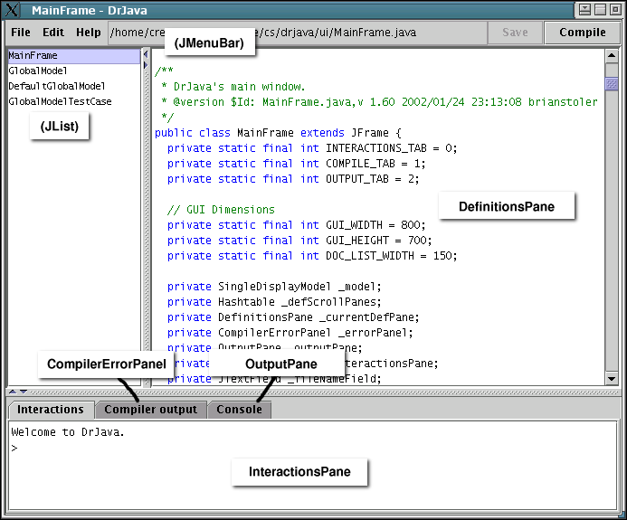

ui package contains classes for the default user interface
for DrJava.
The interface allows multiple documents to be open, but requires that exactly
one document is active at any time, since only one document is displayed in
the GUI. This is enforced by subclassing the
DefaultGlobalModel in the model package to add
additional constraints to the logic and state of DrJava, while maintaining
the separation from the pure user interface classes.
The SingleDisplayModel is a subclass of
DefaultGlobalModel, primarily providing the constraint that
exactly one document is active at any time. It adds public methods for
getting and setting the currently active document to the interface provided
by GlobalModel, and fires a corresponding event through the
SingleDisplayModelListener class, which is a subclass of
GlobalModelListener.
Note that this behavior is not included in the
DefaultGlobalModel because the notion of a single active document
is specific to this user interface. Alternative GUIs might choose to display
multiple documents simultaneously, eliminating the need for this additional
constraint. Housing this logic in a subclass of
DefaultGlobalModel, rather than in MainFrame itself,
allows us to verify through unit tests that only one document can be active.
The graphical user interface is implemented in Swing and is coordinated
through the MainFrame class. The general layout and primary
components of the interface are shown in the image below.

The MainFrame is the JFrame which houses all
other components of the GUI. It is solely a means of displaying the
state and logic kept within its SingleDisplayModel, and
maintains as little state of its own as possible. The
MainFrame consists of a JMenuBar containing the
menus, current filename, and toolbar buttons, together with a collection
of panes for displaying the various components of DrJava. These include
a scrollable JList with the OpenDefinitionDocuments,
a DefinitionsPane for displaying and editing the source code,
and a tabbed pane at the bottom which houses the
InteractionsPane, CompilerErrorPanel, and
OutputPane.
In addition to setting up the GUI and passing action requests to the
model, MainFrame is also responsible for listening to
events fired by both the GlobalModel and the document
itself, in order to keep the display current.
MainFrame is the
DefinitionsPane, which is a JEditorPane that
is tied to a specific OpenDefinitionsDocument in the
model. This pane handles all highlighting and text indenting for its
document, as well as undoing actions specific to the document.
InteractionsPane is held in the tabbed pane at the
bottom of the interface and provides the actual interaction with the
repl interpreter within the GlobalModel.
CompilerErrorPanel is another tab in the tabbed pane,
and contains both a JComboBox for selecting the compiler
and an ErrorListPane for displaying all the errors from
the most recent compilation, sorted by document. The
ErrorListPane is an inner class of
CompilerErrorPanel, and is responsible for highlighting
errors in the list and in the source consistently.
OutputPane is the third tab in the tabbed pane, and
is simply where System.out and System.err
are redirected when DrJava is run.
FindReplaceDialog is a separate JDialog
which handles the logic and state of finding and replacing text in the
code, including highlighting and changing the source position as
necessary. Only one FindReplaceDialog exists in the GUI,
and it must be notified each time the active document is changed.